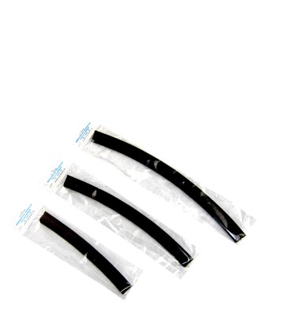

|  | Borracha
para reposição para toda a linha
alumirodo. Produzida com matérias primas de primeira linha,
muitas delas importadas. É desen-volvida com uma maciez
que faz do Alumirodo um rodo do tipo “Puxa e Seca”,
reduzindo em muito o esforço necessário para a perfeita
secagem do piso. |